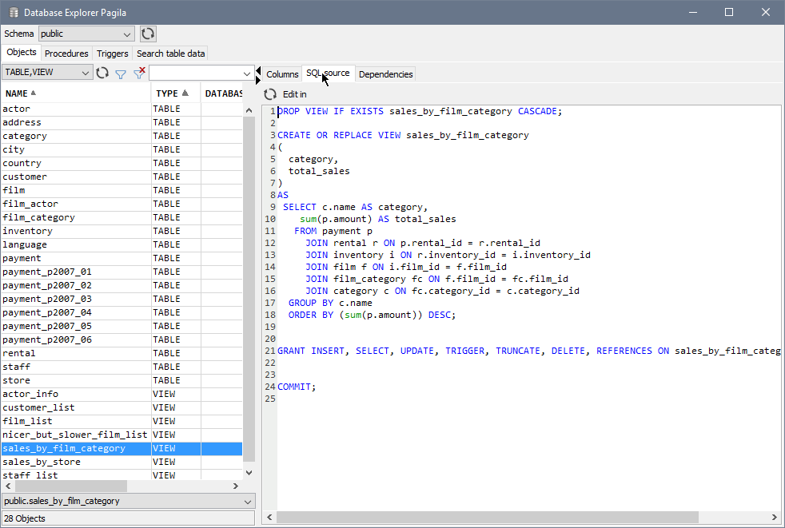
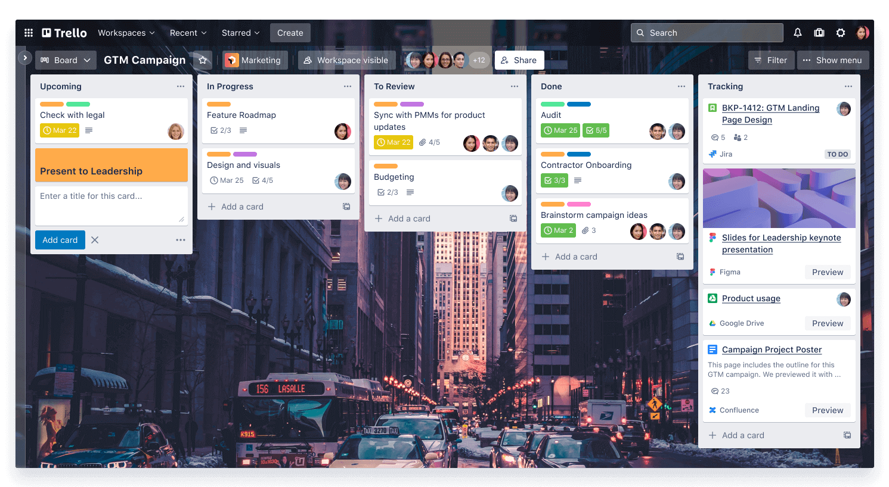
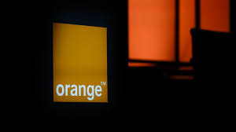

Gérer (des données et l’information)

La gestion de données
Inclut la conception et la manipulation avancée des bases de données. Par exemple, lors de projets, j'ai réalisé des bases relationnelles en respectant des modèles complexes comme les diagrammes de classes UML, pour des cas concrets comme la gestion d'événements culturels. Ces projets m'ont permis de maîtriser des outils comme SQL Workbench et d'optimiser des requêtes pour traiter efficacement de grandes quantités d’informations.
Conduire (un projet)

Projet
Cette compétence m’a appris à structurer et à piloter des projets collaboratifs. Lors du développement du site web SportKoh, par exemple, j’ai contribué à la rédaction de cahiers des charges, à la conception de maquettes fonctionnelles et à la création d’une charte graphique. Ce projet a renforcé mes compétences en gestion de temps, communication avec des clients fictifs et planification de tâches avec des outils comme Trello.
Collaborer (travailler en équipe)

Collaborer
Collaborer efficacement est essentiel dans notre domaine. Lors d’un diagnostic d’entreprise sur Orange/France Télécom, j’ai appris à gérer des recherches collaboratives, à synthétiser des informations en groupe et à préparer des présentations orales percutantes. Ces expériences m’ont aidé à comprendre l’importance des rôles et de la coordination dans une équipe informatique.